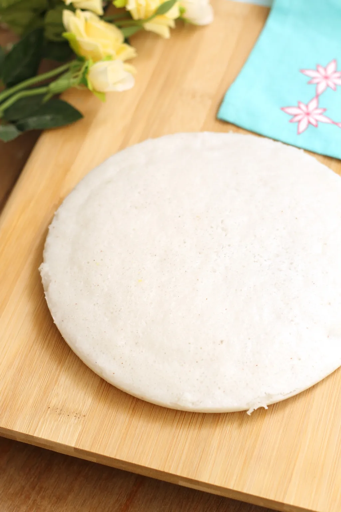

Vattayappam

Description
Learn how to make traditional Kerala snack recipe – Vattayappam. “Vattayappam” literally means “Round Cake/Bread”. It is a soft and fluffy ‘steamed rice cake’ often made for Tea.
Ingredients
- 2 cups Rice Flour
- 2 cups Grated Coconut
- 1/2 cup Sugar
- 2 tbsp Rava(semolina)
- 1/2 tsp Yeast
- 1/2 tsp Sugar
- Raisins – for garnishing
- Salt
Steps
- Cook rava with 2 glasses of water till it becomes soft & loose. Let it cool.
- Add 1/4 glass of lukewarm water to yeast & 1/2 teaspoon sugar. Allow it to rise.
- Ground the coconut with enough water & keep aside.
- Take 2 cups rice flour in a vessel, add rava & mix well. Add yeast & mix well. Add grounded coconut & mix well. Make sure that the batter is not too loose . It should have a medium consistency. Keep it for 3 hours.
- After 3 hours add 1/2 cup sugar (more sugar can be added if required) & salt & stir well.
- Apply a little ghee/oil in a cake tin & pour the batter into it.Put some raisins on the the top. Steam it for 20 – 25 minutes.
Back to Home